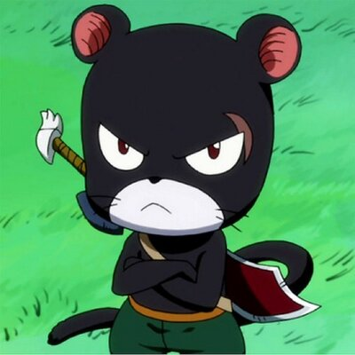

Welcome to My Portfolio
RAHMAD RIZKI, A.MD
Web Developer & Graphic Designer
Summary

I am an IT professional with 4 years of experience as software support, IT support specialist and UI/UX designer, Graphic designer and also skilled in the field of front-end web developer. A person who is very thorough and skilled at operating various IT support platforms. Mastering various software such as Adobe Illustrator, Adobe Photoshop, Wondershare Filmora, Wordpress, Bootstrap.
Have good oral and verbal communication skills, and be able to explain complex software issues in terms that are easy to understand. Experienced in creating social media content, graphic design, video editing, creating WordPress and HTML based websites, creating mockups and visuals for various marketing needs.
Someone who is very ambitious, thorough and driven to create interesting innovations for the company.
Education
Web Development Bootcamp by Dr. Angela Lee (udemy Course)
- Building Websites from scratch
Assocaites Degree at Syiah Kuala university
- GPA 3.18
- Focused on Programming
- Already have some campus project such as Building and Designing websites
- Active in Organisation
SMA Negeri 1 Banda Aceh
Work Experience
Training Staff at PT. Tabarak Travel (2024)
Aceh Besar Prosecuter Office (2022 - 2024)
- Graphic Designer
- IT Staff
- Administration Staff
- Social Media Admin
- Website Admin
- Content Creator
- Video Editor
Faculty of Math and Science Syiah Kuala University (2021)
Skills
- GRAPHIC DESIGN
- WEB DESIGN
- UI/UX
- HTML
- MYSQL
- WORDPRESS
- ADOBE PHOTOSHOP
- ADOBE ILLUSTRATOR
- ENGLISH
- CONTENT CREATOR
- IT SUPPORT
- FRONT-END WEB DEVELOPER
Others